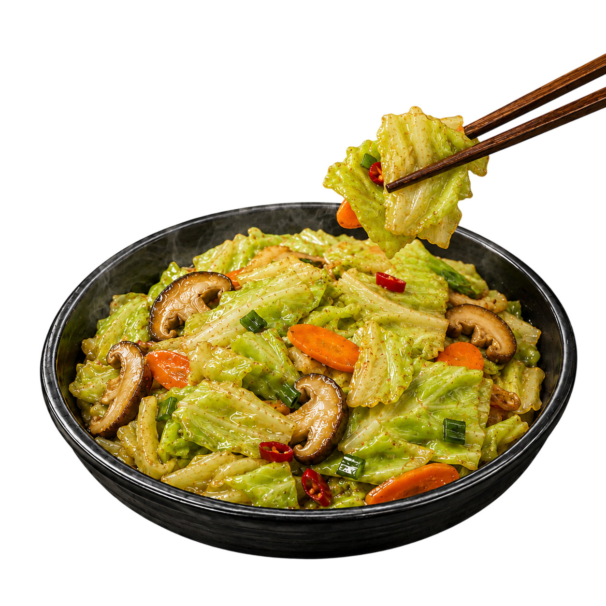
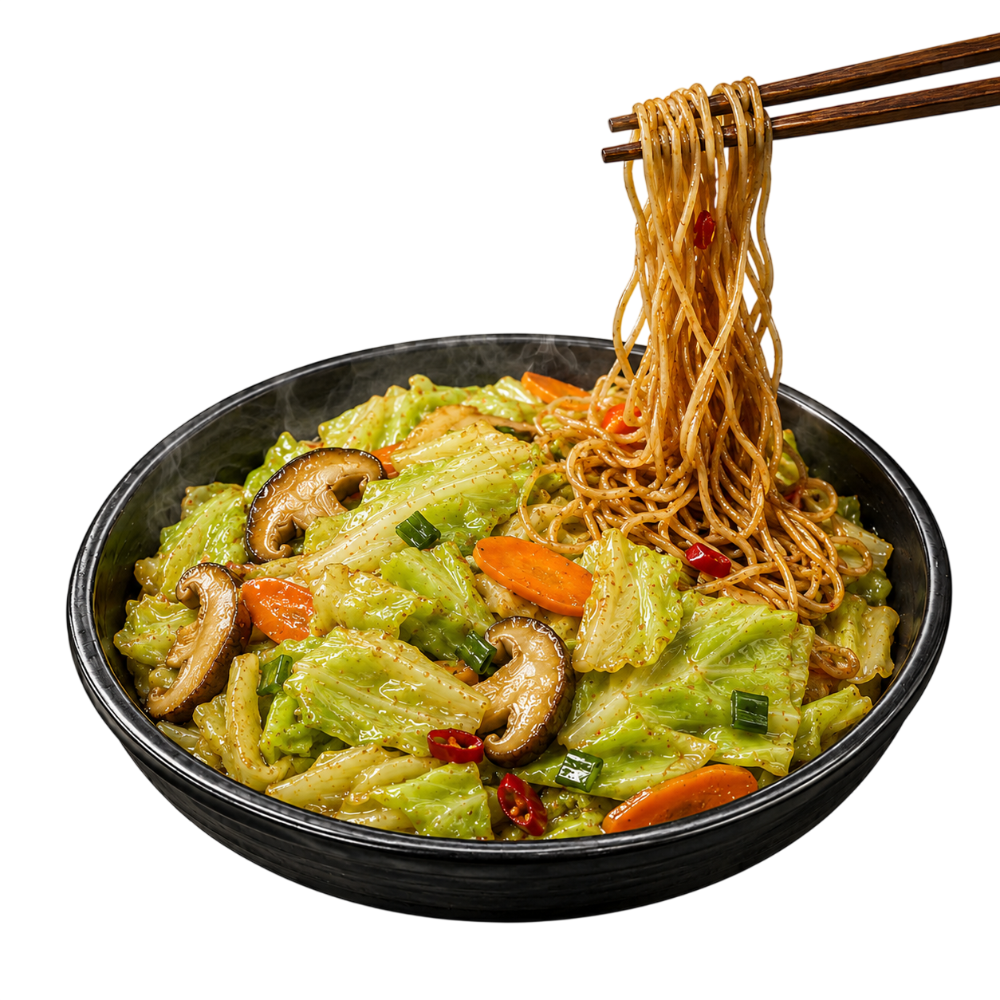
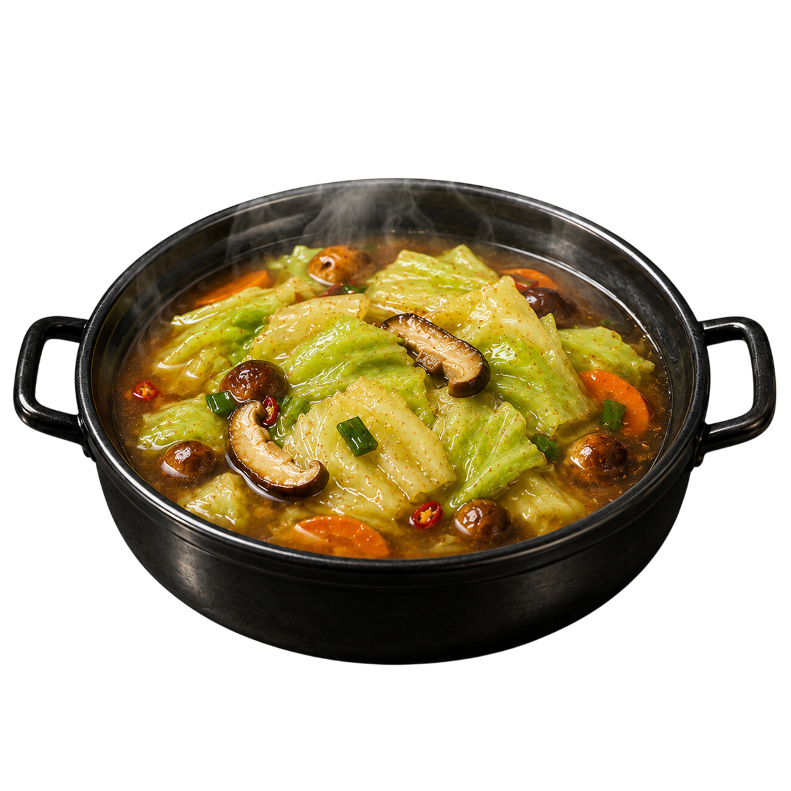

招牌桶烤全雞
適合 2-4 人分享 ｜ 附專用手套與手撕指南
整隻雞以科學比例醃製後進桶，外皮被熱氣收得脆亮，內層肉汁還留著。附火侯烤時蔬、黃金精華雞汁、手撕防燙手套與獨門沾粉，手撕那刻就是開場。
主菜、時蔬與雞汁都來自同一爐火。這不是普通套餐，是一套會讓朋友問「你哪裡買的」的晚餐解法。
適合 2-4 人分享 ｜ 附專用手套與手撕指南
整隻雞以科學比例醃製後進桶，外皮被熱氣收得脆亮，內層肉汁還留著。附火侯烤時蔬、黃金精華雞汁、手撕防燙手套與獨門沾粉，手撕那刻就是開場。

適合 2-4 人分享 ｜ 限量供應 ｜ 解鎖三種美味實驗
時蔬接住桶烤過程滴落的雞汁與油香，甜味、炭香與湯汁集中在盤底。你以為它是配角，它偏要搶鏡。
同一盤時蔬可以從配菜變主角，再變湯底。吃法不難，難的是不要一開始就把它吃光。
一口現烤手撕雞肉、一口吸飽精華的時蔬，油脂與清甜在口中平衡得剛剛好。

把烤時蔬和底部的濃郁湯汁直接淋進台灣傳統麵線裡拌勻，香氣瞬間升級。

可依個人喜好自由加入麵條、冬粉、雞蛋或新鮮青菜。
直接加水煮開，變成鮮甜又有濃郁雞汁香氣的完美湯底。
